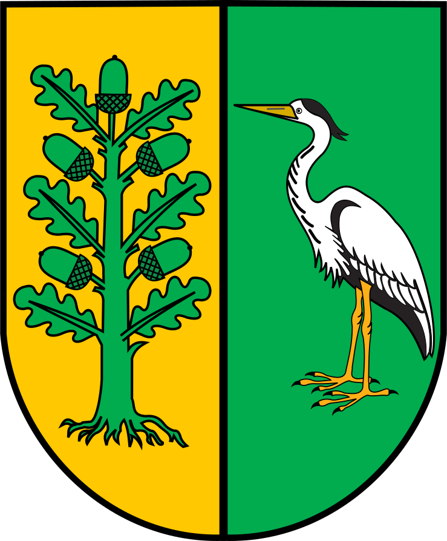

Gmina Białe Błota

Gmina Białe Błota to dynamicznie rozwijająca się jednostka samorządowa, położona w sercu województwa kujawsko-pomorskiego, otoczona malowniczymi terenami zielonymi. Jej priorytetem jest dbałość o rozwój lokalnej społeczności, w tym promowanie aktywności fizycznej i sportu. Dzięki licznym inicjatywom gminnym, mieszkańcy mogą korzystać z bogatej oferty zajęć sportowych, rekreacyjnych i kulturalnych. Wspólnie z Gminą zależy nam na nowoczesnej infrastrukturze sportowej oraz tworzeniu doskonałych warunków do rozwoju młodych talentów i integracji lokalnej społeczności. Jest jeszcze sporo do zrobienia - potrzeba jeszcze trochę wysiłku, cierpliwości i czasu.